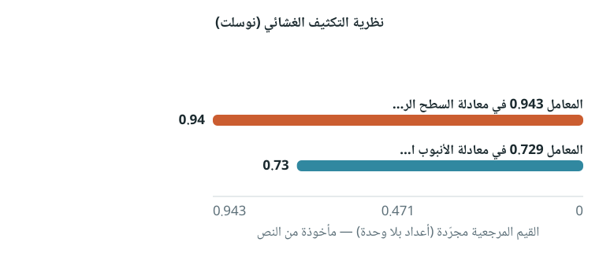

نظرية التكثيف الغشائي (نوسلت)
Film Condensation Theory
حلّ تحليلي يصف تكثيف البخار في غشاء سائل رقيق يجري على السطح بفعل الجاذبية، فيجعل الحرارة تعبر الغشاء بالتوصيل وحده، ويُظهر أن معامل التكثيف ينقص مع الطول لا يثبت.
نظرية التكثيف الغشائي هي أول حلّ تحليلي لانتقال الحرارة في التكثيف، قدّمه نوسلت سنة 1916. تفترض أن البخار يتكثّف على السطح فيكوّن غشاءً سائلًا متصلًا يتحرك بفعل الجاذبية، وأن الحرارة تعبر هذا الغشاء بالتوصيل وحده، وأن سطح الغشاء عند درجة حرارة التشبّع، وأن خواص السائل ثابتة، وأن البخار ساكن لا يبذل إجهاد قص على سطح الغشاء. ونتيجة هذه الفروض أن المقاومة الحرارية كلها في الغشاء، وأن سماكته تزداد كلما نزل السائل إلى أسفل، فتزداد المقاومة وينقص المعامل المحلي. ولذلك فإن المعامل المتوسط على سطح رأسي لا يكون ثابتًا بل يتناسب عكسيًّا مع الجذر الرابع لطول السطح، فسطح أطول أربع عشرة مرة يعطي نصف المعامل تقريبًا. والنظرية تفسّر أيضًا لماذا يتفوق الأنبوب الأفقي على السطح الرأسي: المسار الذي يقطعه السائل على الأنبوب أقصر، فيبقى الغشاء أرقّ. وتُصحَّح النظرية عمليًّا بمعاملات تجريبية للتموّج وتكدّس الصفوف، لأن الغشاء الحقيقي يتموّج فوق رقم غشاء معيّن فيرقّ موضعيًّا ويرتفع المعامل.
كيف تعمل الظاهرة؟
البخار الملامس لسطح أبرد من درجة تشبّعه يتكثّف عليه ويكوّن طبقة سائلة. هذه الطبقة تتحرك إلى أسفل تحت وزنها، وكلما تحركت تجمّع فيها مزيد من المتكثّف من أعلى، فازدادت سماكتها. ولأن الحرارة يجب أن تعبر السائل قبل أن تصل إلى المعدن، ولأن موصلية السائل محدودة، فإن سماكة الغشاء هي التي تحدد المقاومة. ولهذا يكون المعامل المحلي كبيرًا عند القمة حيث الغشاء رقيق، وصغيرًا عند القاعدة حيث الغشاء سميك، ويكون المعامل المتوسط محصّلة توزيع غير منتظم. والنظرية تحصل على هذا التوزيع من موازنة بين قوة الجاذبية التي تسحب الغشاء ولزوجة السائل التي تقاوم السحب، مع موازنة حرارية تربط كمية المتكثّف بالحرارة المعبرة.
العلاقة بالأرقام
المعادلة تعطي المعامل المتوسط على سطح رأسي متناسبًا عكسيًّا مع الجذر الرابع للطول وللفرق الحراري معًا، فمضاعفة الطول تخفض المعامل إلى نحو 84% من قيمته، ومضاعفة الفرق الحراري تفعل الشيء نفسه. وفي المثال المنشور لبخار عند 100 درجة وجدار عند 90: 11440 عند 0.1 متر، و7650 عند 0.5 متر، و6430 عند متر واحد. وعند تثبيت الطول 0.5 متر: 9080 عند فرق 5 كلفن، و7650 عند 10، و6450 عند 20، و5460 عند 40. والتدفق الحراري ينمو أسرع من الفرق الحراري لكنه لا يتناسب معه خطيًّا، لأن زيادة الفرق تُسمّك الغشاء فتُقاوم الزيادة.
مفاهيم متقاربة
يُفصل النموذج عن التكثيف القطري الذي يعطي معاملات أعلى لأن السطح يبقى مكشوفًا للبخار في مساحات بين القطرات، وعن التكثيف داخل الأنابيب حيث يُضاف إجهاد القص البخاري إلى الجاذبية فيُرقّق الغشاء أو يدفعه عكسيًّا في التدفق الصاعد. ويُفصل كذلك عن الغليان الغشائي: هناك غشاء بخار عازل يكوّن مقاومة كبيرة ويُخفض المعامل بشدة، وهنا غشاء سائل ناقل يكوّن مقاومة صغيرة نسبيًّا. والفرق الجوهري أن الغشاء في التكثيف نتيجة العملية لا عائقها الأول.
حدود التطبيق
تفترض النظرية غشاءً صفيحيًّا سلسًا، لكن الغشاء الحقيقي يتموّج فوق رقم غشاء نحو 30، والتموّج يرقّق الغشاء موضعيًّا فيرفع المعامل، ولهذا تُضاف تصحيحات تجريبية تبلغ في المثال نحو 4% عند 0.1 متر و19% عند متر واحد. وتفترض بخارًا ساكنًا، فإن كان البخار سريعًا بذل إجهاد قص غيّر توزيع الغشاء. وتفترض خواص ثابتة، وهي تتغير مع درجة الحرارة في الأغشية السميكة. وتفترض أن المتكثّف لا يتراكم من صفوف أعلى، وفي حزم الأنابيب يتراكم فيثقل الغشاء، ويُصحَّح ذلك بأسّ على عدد الصفوف.

| الكمية | القيمة | المصدر |
|---|---|---|
| المعامل 0.943 في معادلة السطح الرأسي | 0.943 — | [1] |
| المعامل 0.729 في معادلة الأنبوب الأفقي | 0.729 — | [1] |
| معامل التكثيف على جدار رأسي بطول 0.1 متر | 11440 واط/(متر مربع·كلفن) | [1] |
| معامل التكثيف على جدار رأسي بطول 1 متر | 6430 واط/(متر مربع·كلفن) | [1] |
| سماكة الغشاء في أسفل جدار بطول متر واحد | 0.140 مليمتر | [1] |
المصادر
- 1 Condensation Heat Transfer Analysis — Nusselt Film Theory, Tube Orientation, Rows and Waviness — NovaSolver (2026). novasolver.jp/en/coupled/thermo-fluid/condensation.html · اطُّلع عليه 2026-11-28
- 2 Die Oberflächenkondensation des Wasserdampfes — Wilhelm Nusselt — VDI-Verlag (1916). books.google.com/books/about/Die_Oberfl%C3%A4chenkondensation_des_Wasserd.html?id=m8fwjgEACAAJ · اطُّلع عليه 2026-11-28
استشهد بهذا المصطلح
الصيغتان مبنيتان من بيانات الصفحة نفسها: العنوان والتاريخ ورابط النسخة المنشورة.
نظرية التكثيف الغشائي (نوسلت) — Film Condensation Theory. (2026). ديوان المعرفة — انفراد. https://infiradev.com/diwan/terms/term-film-condensation-theory.html
@misc{term-film-condensation-theory2026,
title = {نظرية التكثيف الغشائي (نوسلت)},
titleaddon = {Film Condensation Theory},
howpublished = {{ديوان المعرفة — انفراد} — مرجع علمي عربي},
year = {2026},
url = {https://infiradev.com/diwan/terms/term-film-condensation-theory.html},
urldate = {2026-11-28},
note = {مراجعة علمية: Abdullah Al-Huwaidi}
}
راجعه: Abdullah Al-Huwaidi · 2026-11-28 · آخر تحديث 2026-11-28